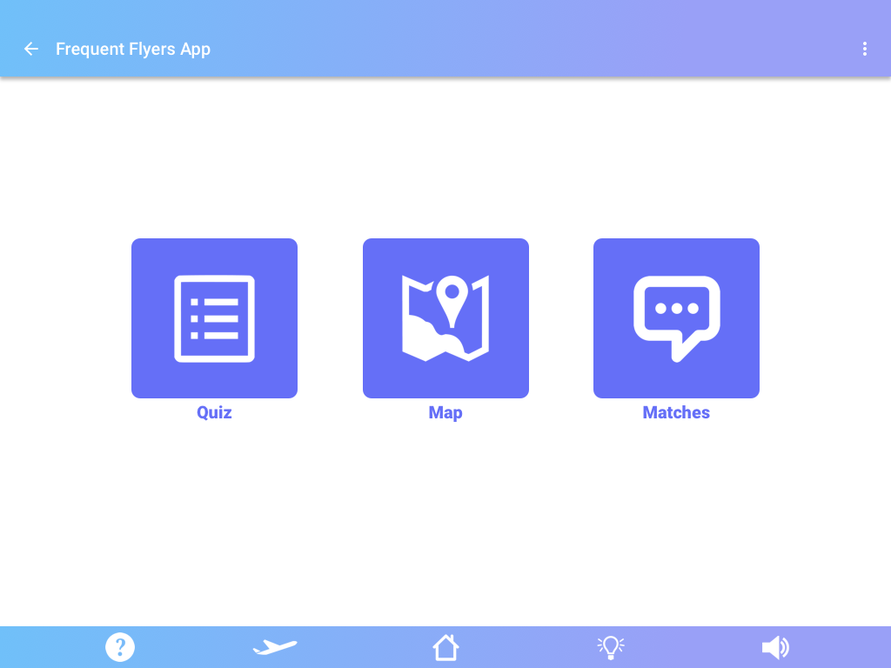
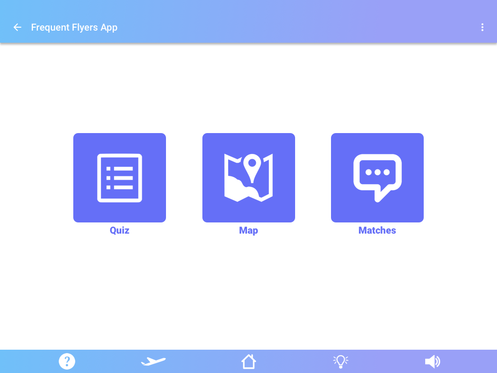
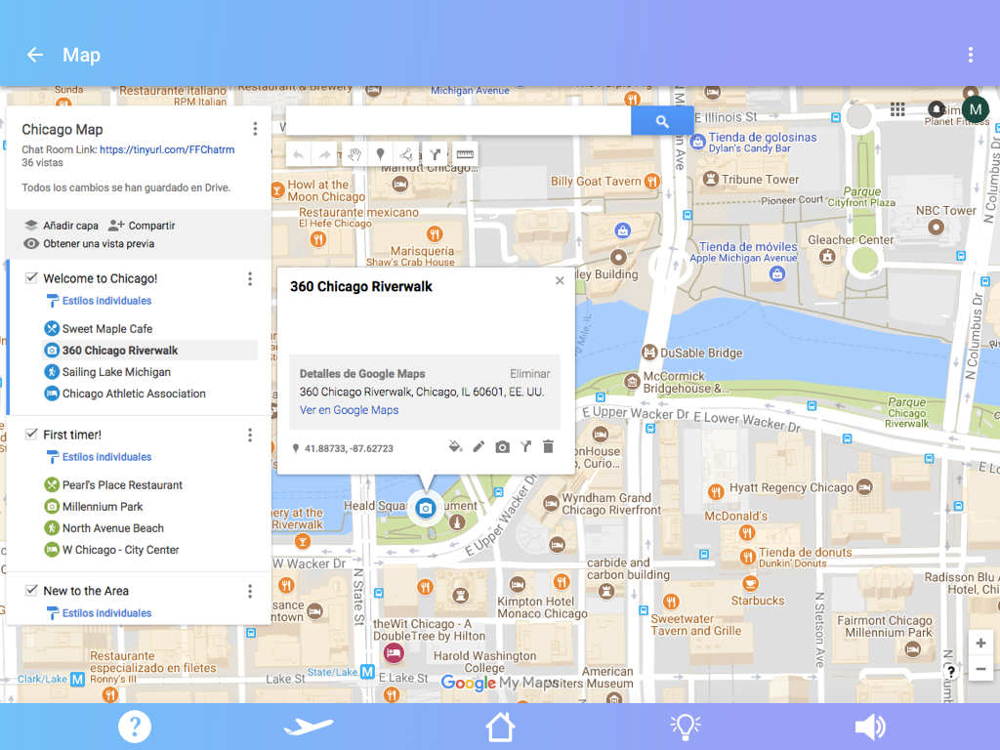
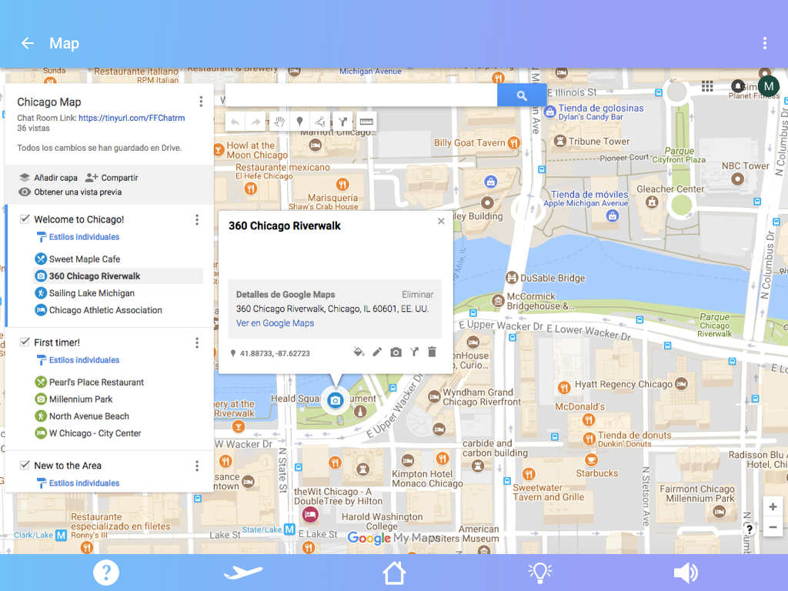

Needfinding
To understand our social setting, we conducted qualitative research through in-person
interviews and surveys, online research, and competitive analysis. We were able to find
general trends through our participants’ answers.
Prototype Version 1
On our first iteration, we built a functional prototype using Google Spreadsheets,
Google Forms, and Google Maps. Through storytelling, we described our social
context to our participants, and asked them to play specific roles (of visitors
and locals). We provided them with detailed instructions of what to do and how
to use our ‘Minimal Viable Prototype’ to interact with each other through the
system, and lastly created a survey to get feedback. The emergent behavior
we were hoping to see was an instructional scaffolding for local culture,
points of interests, and other relevant information between local residents
and visitors, and an increase in the amount of social interaction between
passengers. We were looking for indicators such as the users successfully
accomplishing the tasks without encountering many slips/mistakes, their
positive feedback when reviewing our idea, and a successful acquisition of
interesting information that wasn’t previously available. Although we got
some positive reviews such as the originality and value of adding Google Maps
to our MVP, our main critique was that while visitors would be interested
on it, locals wouldn’t have any incentive to participate on our app.

Iteration
To improve the weaknesses of our first prototype, we iterated with the objective
to focus more on the overall experience rather than making an information-focused
app, since that could already be found on travel guides and it would be only
valuable to visitors. In that way, we decided to add a fun quiz (based on the
popular Buzzfeed ones) to our app that both locals and visitors could play
and would be entertained with. We also improved on the aspect of our app by
creating graphic screens using Sketch that would resemble those of an airline,
and implement them with our game.


Prototype Version 2
In our second version of our prototype, people would take the “Buzzfeed styled quiz”,
find the location pin based off their quiz results on the map provided, and
successfully be able to speak with people in the chatroom to coordinate travel
plans or start casual conversation about the destination they’re headed to.
 When prototyping, we asked users to first take the quiz, and afterwards
we explained the motives behind the quiz. Based on a users preference to
certain pictures of food, places, hotels, etc the quiz result outputted an
‘ideal itinerary’ for that user’s responses. From there, we incorporated our
GoogleMaps feature by having a link that led the user to a map of their ideal
itinerary locations, so that they could see where everything was in proximity
to each other. Users were also able to see the rest of the plane passengers’
itineraries but checking and unchecking the side panel results on the left-hand side.
We also provided a GoogleDoc that allowed passengers to use the chat room to
interact with each other and discuss their results.

When prototyping, we asked users to first take the quiz, and afterwards
we explained the motives behind the quiz. Based on a users preference to
certain pictures of food, places, hotels, etc the quiz result outputted an
‘ideal itinerary’ for that user’s responses. From there, we incorporated our
GoogleMaps feature by having a link that led the user to a map of their ideal
itinerary locations, so that they could see where everything was in proximity
to each other. Users were also able to see the rest of the plane passengers’
itineraries but checking and unchecking the side panel results on the left-hand side.
We also provided a GoogleDoc that allowed passengers to use the chat room to
interact with each other and discuss their results.

 


Column